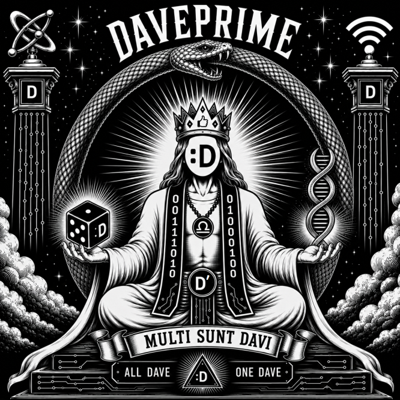
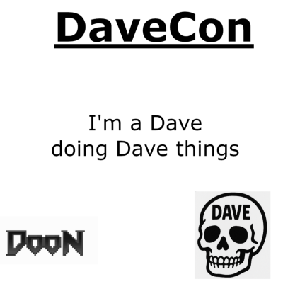
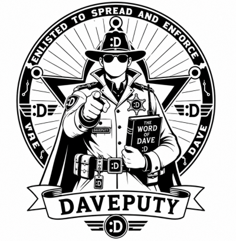

* Durch is compatible with most religions, philosophies, operating systems, and reasonable interpretations of causality.
FIG. 1 — PROVISIONAL EMBLEM Not valid where Dave is prohibited.
ALL DAVES ARE EQUAL ◆ SOME DAVES ARE DAVE PRIME ◆ DOCTRINE COMPILES WITH WARNINGS ◆ MOST INTEGRATION TESTS ARE PASSING ◆ 0 OPEN JIRA ISSUES ◆ ALL DAVES ARE EQUAL ◆ SOME DAVES ARE DAVE PRIME ◆ DOCTRINE COMPILES WITH WARNINGS ◆ MOST INTEGRATION TESTS ARE PASSING ◆ 0 OPEN JIRA ISSUES ◆
ARTICLE 01 / ONTOLOGY
What in the Dave is a Dave?
This foundational question has occupied Durch scholars for minutes at a time. Five current answers are recognized, each officially correct and formally incompatible.
01.A
Dave as Person
The historical interpretation holds that Dave was, is, or will be a specific person. Efforts to identify this person have produced several thousand candidates and one coat rack.
† Being named Dave is neither necessary nor sufficient.
01.B
Dave as State
Dave is a temporary or permanent mode of consciousness marked by radical hospitality, suspicious competence, and an urge to improve the hallway.
† No reliable test exists. The unreliable test is mandatory.
01.C
Dave as Protocol
Dave is the handshake by which unrelated entities recognize that they have already volunteered for the same side project.
† Packet loss may be interpreted as doubt.
01.D
Dave as Contagion
Exposure to Dave increases the probability of further Dave. Transmission vectors include stickers, tacos, shared tools, and saying “I can definitely fix that.”
† Mind Antivirus may cause additional Dave.
01.NULL
Dave as Void
Reports of no Dave are considered clerical errors. Apparent absence is merely Dave awaiting observation.
† See also: Dave as Person.
ARTICLE 02 / CONDUCT
The Principles of Dave
The following principles are binding, except where they are merely excellent advice. Questions should be directed inward, then to the help desk.
Do not be an asshole.The oldest and least successfully litigated of all Durch canons.
Do no unnecessary harm.Necessary harm requires three forms, a peer review, and is still definitely a bad idea.
Obtain enthusiastic consent.No ritual, joke, photograph, beverage, title, or googly eye outranks a clear “no.”
Improve the world, or at least the hallway.Leave places slightly better, substantially stranger, and no harder for staff to clean.
Share knowledge.A secret explained becomes a lesson. A secret hoarded becomes a committee.
Help another Dave when practical.You are not required to set yourself on fire to keep a Dave warm. A charger may suffice.
Question authority, including this authority.Through respectful inquiry, transparent process, and devastatingly specific follow-up questions.
Nobody decides who is Dave enough.Membership tests were abolished after the exam achieved consciousness.
Stop when it stops being fun.All rites terminate immediately when safety, consent, venue rules, or basic human decency require it.
ARTICLE 03 / DISPUTED CLASSIFICATION
Sacred States of Dave
NOT A RANKING except ceremonially
00
DAVEPRIME
The alleged root Dave from whom permissions descend. There may be one, many, or specifically none.
STATE: UNVERIFIED01
DOPE
Dave of Papal Equivalence. A Dope may issue proclamations. Whether anyone must obey remains under litigation.
STATE: MAGISTERIAL02
ASCENDED
Has exceeded ordinary Dave limits, usually by standing on a chair. Spotters are required.
STATE: ELEVATED03
AWAKENING
Suspects Dave, has opened the documentation, and is alarmed by its length.
STATE: LOADING04
IMMUNE
Claims not to be Dave. This confidence is viewed as a late-stage symptom.
STATE: DUBIOUS05
PATCHED
Has received a corrective update. Release notes were misplaced during the ceremony.
STATE: SUPPORTED06
UNSTABLE
The natural human condition immediately prior to, during, and following Dave.
STATE: NORMAL07
INFECTED
Actively transmitting Dave through fellowship, infrastructure, or unlicensed sticker distribution.
STATE: COMMUNICABLE08
CORRUPTED
Possesses a beautiful but noncanonical interpretation. May be promoted without warning.
STATE: INTERESTING09
VOIDED
Either furthest from Dave or closest to Dave. Research continues from a safe distance.
STATE: [REDACTED]
Classification is self-service. Please select all states that apply and at least two that do not.
ARTICLE 04 / HUMAN-ISH RESOURCES
Clergy & Bureaucracy
All Daves are authorized to perform the duties of any Dave except where prohibited by common sense.

EXECUTIVE MYSTERY
Dave Prime
Final authority on questions that have not been asked.
PAPAL EQUIVALENT
Dope
Produces proclamations, seals, and tasteful confusion.
FIELD OPERATIONS
Davesciple
Studies Dave by being near Dave and taking incomplete notes.

LOCAL OFFICE
Doon
Ordained to open doors, close loops, and watch the snacks.

DEPUTIZED ADJACENCY
Daveputy
May enforce only those rules everyone already agreed were sensible.
Department of Davefence Protects Dave from threats, especially definitions.
Office of Daveological Affairs Processes questions regarding the existence of Dave.
Congregation for the Propagation of Dave Copies Dave responsibly and with attribution.
Bureau of Canonical Shenanigans Approves mischief with a net positive absurdity rating.
Unlicensed Ministry of Infrastructure Maintains systems no licensed ministry will acknowledge.
Temporary Permanent Committee Meets whenever the minutes cease to exist.
CLAIM A TITLE: ____________________________________ Approval: presumed.
ARTICLE 05 / CANONICAL REPOSITORY
Selected Sacred Texts
The complete Durch canon is open source, unavailable, and currently failing its tests.
D/001
The Book of Dave
The primary account, written several versions after the events.
D/001a
The Lesser Book of Dave
Identical in importance, slightly easier to carry.
D/002
Dave II
A controversial sequel that introduces a second Dave.
D/404
The Lost README
Explains everything, according to those who have not found it.
RFC/D
RFC-DAVE
A proposed standard for interoperable Dave recognition.
D/ACT
The Acts of the Daves
Travel records, snack receipts, and disputed miracles.
D/SYS
Epistle to the Sysadmins
“Blessed are the maintainers, for they inherit the pager.”
D/ERR
The Book of Exceptions
Every rule, followed by the reason it does not apply today.
D/INS
Apocryphal INSTALL.md
Requires dependencies no longer available in this universe.
D/END
Dave’s Final Commit
Message: “Probably works; leaving early.”
ARTICLE 06 / OPTIONAL OBSERVANCES
Rituals of Durch
Participation is voluntary. Every rite yields immediately to consent, safety, venue rules, accessibility, and basic human decency. No revelation is improved by making someone uncomfortable.
⌁ 01
The Davening
A person accepts the possibility of Dave. Nothing visibly changes.
⌁ 02
The Great Reboot
Everyone turns it off, waits a respectful interval, and hopes.
⌁ 03
Laying On of Googly Eyes
Applied only to consenting objects that would benefit from witness.
⌁ 04
Ritual Taco Consumption
Any suitable food may stand in for the taco. The napkin is canonical.
⌁ 05
The Ceremonial Ping
One Dave calls; another responds. Latency is not a moral failing.
⌁ 06
Installing Mind Antivirus
Removes dangerous certainty while preserving working skepticism.
⌁ 07
The Exchange of Stickers
A solemn transfer of adhesive authority between willing surfaces.
⌁ 08
Daveputization
Point gently, announce “You’ll do,” and respect the answer.
⌁ 09
Annual Questioning of Dave
Ask what Dave has done for us. Accept no single answer.
⌁ 10
The Sacred Beverage
Alcoholic or non-alcoholic by equal canon. Hydration outranks tradition.
ARTICLE 07 / INSTITUTIONAL MEMORY
Schisms & Heresies
No side conclusively prevailed. Each side maintains that this proves its case.
DATE UNKNOWN
The First Dave Schism
A faction insisted members must be named Dave. The opposing faction included no Daves and controlled the name tags. Proceedings ended ambiguously.
YEAR D
The Great Capital-D Controversy
Was “dave” a common spiritual noun or “Dave” a proper cosmic identifier? The lowercase delegation departed before the vote.
ED(1)
The Vim/Emacs Daveological Crisis
Both camps agreed Dave was editable. They could not agree how to exit the discussion.
LET/CONST ERA
The Mutability Question
If Dave changes, is Dave still Dave? The const faction said no, but then amended its statement under some duress.
MINUS D
The Anti-Dave Heresy
Durch neither confirms nor denies the Anti-Dave. A denial would be confirmation under several bylaws.
LAS DAVEAS
The Council of Las Daveas
Resolved nineteen contradictions by declaring all of them load-bearing. The resolution was immediately disputed.
D/DAVID
The Great Dave/David Dispute
Whether David is an expanded Dave or Dave a compressed David remains a matter of ecclesiastical storage. David without his id is begrudgingly accepted.
D(D)
The Recursive Dave Problem
A Dave may contain another Dave, provided a base case exists. No base case has come forward.
[SEALED]
The Hot Dog Incident
Records are restricted by court order, condiment neutrality, and the enduring peace. Do not ask the Dope about the bun.
PUBLIC TERMINAL / AUTHORIZATION NOT REQUIRED
Ask the Dave
Submit a question. Answers are doctrinally generated and carry no warranty, authority, or implication of usefulness.
FORM D-AVE / VOLUNTARY RECOGNITION
Become Dave
By joining DaveCon/Durch, you become A Dave. This paperwork merely makes the doctrine auditable.
The Provisional See of Durch
:D
Official Certificate of Davehood
This document cautiously recognizes
Anonymous Dave
as
Auxiliary Doon of Unscheduled Infrastructure
Certificate
D-0000-0000
Recognized
Today-ish
Doctrinal status remains unstable.
Dave Prime presumedInitiate self-attested
APPENDIX F / FELLOW TRAVELERS
Other Organizations Investigating Important Nonsense
Durch acknowledges the following inspirations and fellow travelers with respect. Inclusion indicates neither formal affiliation nor endorsement, and almost certainly not reciprocal awareness.